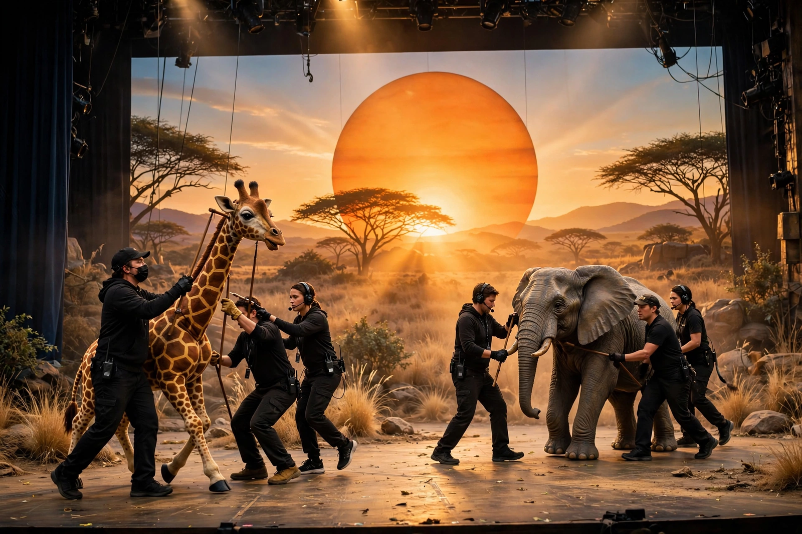

| The Lion King | |
|---|---|
 | |
| Music | Elton John; additional music by Lebo M, Mark Mancina, Jay Rifkin, Hans Zimmer |
| Lyrics | Tim Rice; additional lyrics by Lebo M |
| Book | Roger Allers and Irene Mecchi |
| Basis | The Lion King (1994 animated film) |
| Premiere | November 13, 1997 — New Amsterdam Theatre, Broadway |
| Director / designer | Julie Taymor |
The Lion King is a musical based on the 1994 Walt Disney Animation Studios film of the same name, with music by Elton John, lyrics by Tim Rice, and book by Roger Allers and Irene Mecchi. Directed by Julie Taymor — the first woman to win the Tony Award for Best Direction of a Musical — the production is famous for its pioneering use of puppetry and masks, in which actors visibly operate life-size animal puppets while their own faces remain part of the design.
The show premiered in Minneapolis in July 1997 before opening on Broadway at the New Amsterdam Theatre on November 13, 1997, transferring to the Minskoff Theatre in 2006. It won six Tony Awards, including Best Musical. Taymor's designs draw on African art and theatre traditions, and the score expands the film's songs — "Circle of Life", "Hakuna Matata", "Can You Feel the Love Tonight" — with African chants and new material by South African composer Lebo M, including "Nants' Ingonyama" and the moving lament "Shadowland."
The Lion King has been produced in dozens of countries and translated into many languages; a London production has run at the Lyceum Theatre since 1999. In 2014 it surpassed The Phantom of the Opera as the highest-grossing stage or film production in history, with worldwide grosses exceeding $8 billion across its productions. It is the third longest-running Broadway show and the highest-grossing title in Broadway history.